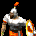

Mapa: {{ partidas[1].nombre_mapa }}
Subida por: Frem
Nombre archivo
{{ partidas[1].nombre_archivo }}
Duracion partida: {{ partidas[1].duracion_partida }}
Punto de vista: {{ partidas[1].punto_de_vista }}
Mapa_revelado: {{ partidas[1].mapa_revelado }}
Velocidad: {{ partidas[1].velocidad }}
Poblacion: {{ partidas[1].poblacion }}
Diplomacia: {{ partidas[1].diplomacia }}
Nombre_mapa: {{ partidas[1].nombre_mapa }}
Tamano_mapa: {{ partidas[1].tamano_mapa }}
Bloqueo_diplomacia_equipos: {{ partidas[1].bloqueo_diplomacia_equipos }}
Dificultad: {{ partidas[1].dificultad }}
Equipos: {{ partidas[1].teams }}
Equipo 1
TODO / POR HACER / AUN INCOMPLETO / SIN CÓDIGO VUE3
◉ 2- (WARRIORS)CoMemory: Japoneses
◉ 3- (WaRRiOrS)_Frem_: Mongoles
◉ 4- (WARRIORS) Mati45574: Turcos
Equipo 2
TODO / POR HACER / AUN INCOMPLETO / SIN CÓDIGO VUE3
TODO / POR HACER / AUN INCOMPLETO / SIN CÓDIGO VUE3
TODO / POR HACER / AUN INCOMPLETO / SIN CÓDIGO VUE3
◉ 1- (WArrioRs)_MAEsTro_: Sarracenos
◉ 5- Pirata77: Chinos
◉ 6- (WARRIORS)Slow: Godos


TODO / POR HACER / AUN INCOMPLETO / SIN CÓDIGO VUE3
 1- (WArrioRs)_MAEsTro_: Sarracenos (Blue)
1- (WArrioRs)_MAEsTro_: Sarracenos (Blue)
 5- Pirata77: Chinos (Purple)
5- Pirata77: Chinos (Purple)

6- (WARRIORS)Slow: Godos (Gray)